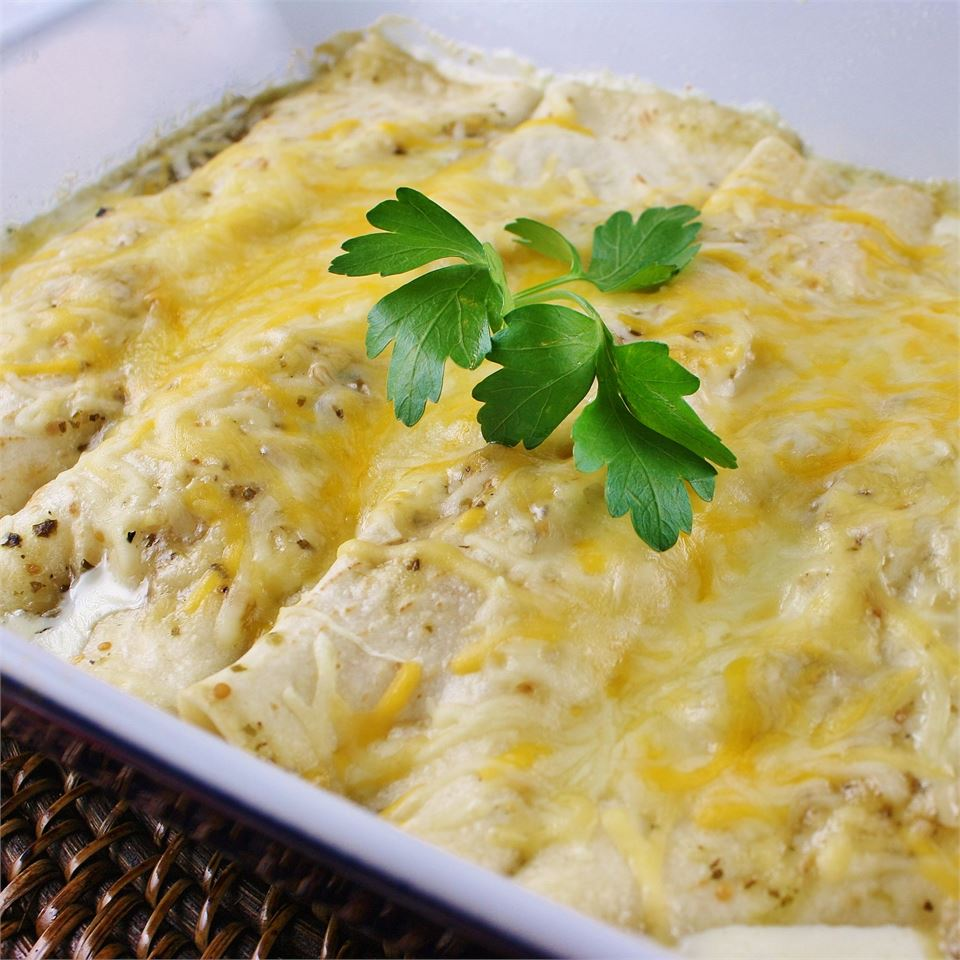

Enchiladas

Description
An enchilada is a corn tortilla rolled around a filling and covered with a savory sauce. Enchiladas can be filled with various ingredients, like meat, beans or chicken. Enchilada sauces include chili-based sauces, such as salsa roja, mole, salsa verde or cheese-based sauces.
Enchiladas verdes are sauced with salsa verde and typically made with white corn tortillas, filled with poached chicken breasts and topped with queso fresco.
Ingredients
- garlic
- serrano peppers
- small green tomatoes
- corn tortillas
- shredded chicken meat
- cilantro
- sour cream
- cotija cheese
- onion
Steps
- Cook the garlic, serrano peppers and tomatoes.
- Put the cooked ingredients with some water in a blender and blend until smooth.
- Soak a tortilla in the sauce and fill them with the shredded chicken.
- Put the enchiladas in a dish, and top them with cream, cheese and onion.